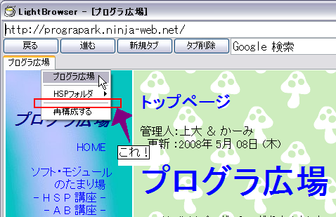

Favorite の使い方
お気に入りのメニューは、Favorite フォルダを参照して構築されます。
リンクや名称は、Favorite.lbf というファイルに記述します。
今回は、その記述のルールを説明していきます。
リンクの記述
まず、Favorite フォルダの Favorite.lbf ファイルを、
テキストエディタで開いてください。

※多少違っていてもかまいません。
デフォルトはこんな感じですね。
まず、普通のリンクを設定しましょう。
一行目を見てください。
http://prograpark.ninja-web.net/|プログラ広場
よく見ると、アドレスの終わりに | が付いていて、
その右に「プログラ広場」という、メニューに表示される文字がありますね。
ルールは非常に簡単です。
アドレス|エイリアス
という形で記述すれば、リンクに追加出来ます。
「エイリアス」というのは、メニューに表示されるときの名前です。
何かの別名のことを、エイリアスと呼ぶことが多いのです。
区切り文字 | は、バックスペースの左にあるキーと、
Shift キーを押せば入力できます。( 僕のキーボードでは )
セパレータの記述
セパレータの入力方法も、書いておきましょう。
セパレータとは、これのことです。

※画像は ver 1.0 β1 のものです。
セパレータには「区切るもの」という意味があり、
その名の通り、メニューを区切っています。
これは特殊なアイテムですので、特別な方法でメニューに追加されます。
よって、通常とは別の記法が必要です。
具体的には、以下のようになります。
--
ハイフン2つです。
先頭2文字がハイフン2つの場合、その行のそれ以降は無視されます。
また、「再構成」項目の上にあるセパレータ ( 画像のもの ) は、自動で追加されています。
フォルダの挿入
フォルダとは、いくつかのファイルをまとめるものですね。
この場合も同じ、いくつかのリンクを纏めるもののことです。
メニューでは、以下のように表示されます。

※画像は ver 1.0 β1 のものです。
こんな感じです。メニューの右側に「>」があるのが特徴です。
フォルダを挿入するには、以下のようにします。
F:フォルダ名|エイリアス
フォルダ名は、Favorite フォルダの中にある、実際のフォルダ名です。
エイリアスについては上記参照。
フォルダの挿入には、行の最初に「F:」を付けます。
ただし！
お話はここからなのです！！
フォルダ内のリンク
先ほど、フォルダを挿入することは出来ました。
ただ、フォルダ内にリンクを書く方法は言っていません。
フォルダ内にリンクを書くには、フォルダ同士の関係が必要になってきます。

始めの画像は、↑の画像のようなフォルダ構成になっていました。
結論から言ってしまうと、
フォルダ内のリンクは、実際のフォルダ内に生成される Favorite.lbf に書き込みます。
まず、「F:」を使ってフォルダを挿入させ、
LightBrowser を起動すれば、自動的にフォルダとファイルが生成されます。
そのときできた Favorite.lbf に書き込めば、見事に完了です。
もちろん、フォルダの中にフォルダを入れることも出来ます。
お気に入りを更新するには、「再構成する」を使ってください。
長い文章を最後までありがとうございました。
by 上大
{kind=link}